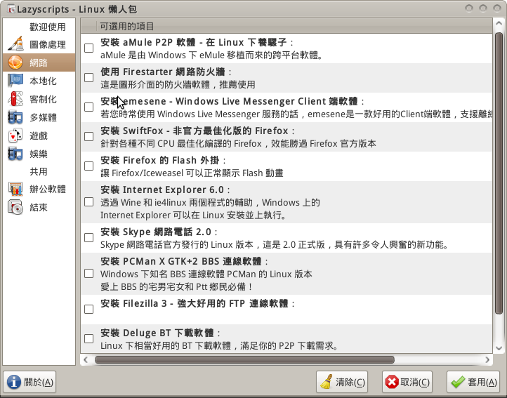
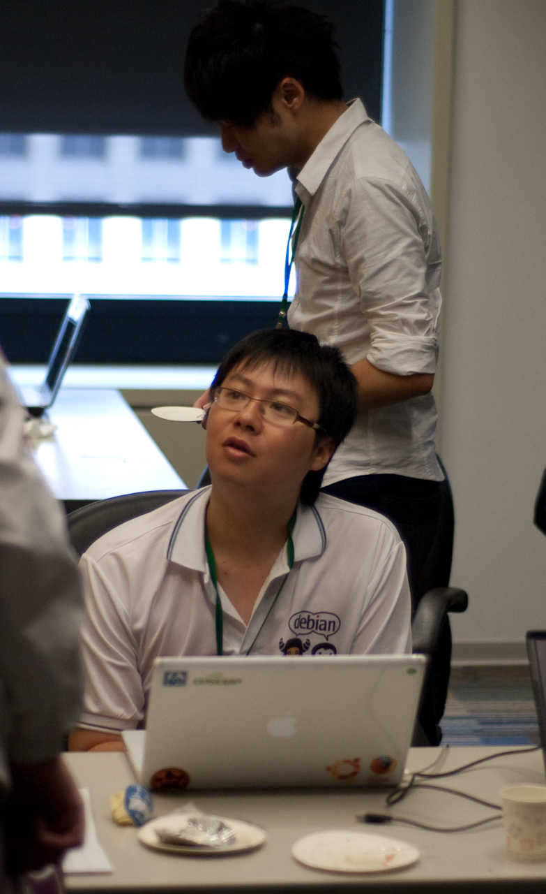
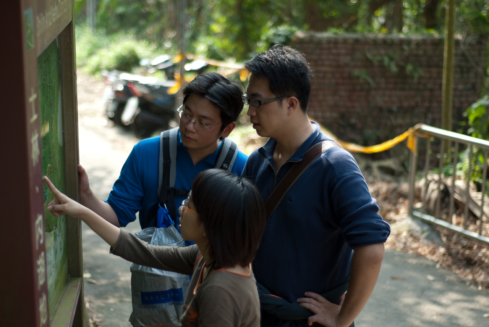
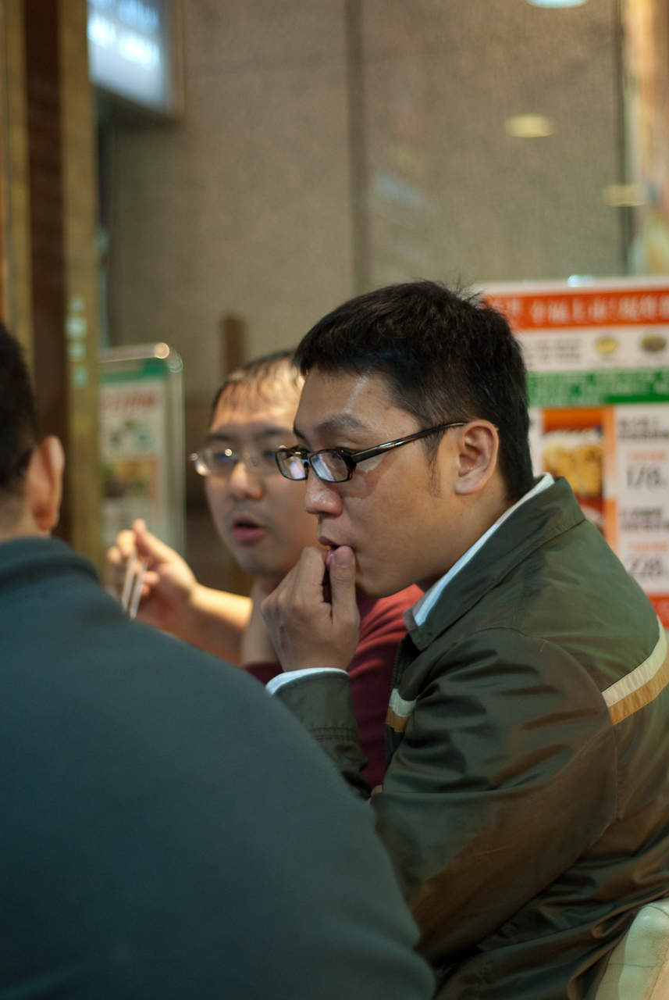
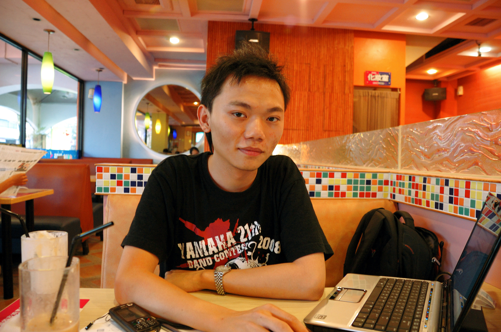
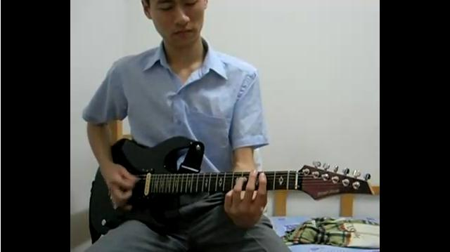
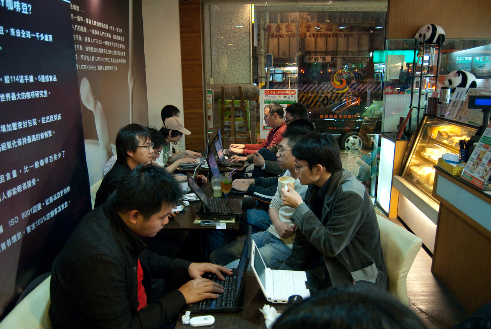

也紀念我們永遠的朋友 李士傑先生（Shih-Chieh Ilya Li）。
Linux懶人包進化版：Lazyscripts
<專案簡介>
使用 Linux 的朋友又有福了！最新版 Linux 懶人包 Lazyscripts 於 4 月份正式釋出。除了承襲 Lazybuntu 的簡單上手、容易使用外，這次的懶人包更同時支援 Ubuntu、Debian，並且開始開發支援 Fedora 及 openSUSE 等台灣常見的 Linux 版本。Lazyscripts 能夠一鍵設定中文化介面，並自動從網路下載多媒體編碼器、安裝更好用的燒錄軟體、字典、廣播收聽軟體、BBS 連線程式等，輕易滿足一般辦公室應用與校園學生使用之需求。
近來國人使用 Linux 或使用雙系統（Linux 與 XP）的人數越來越多，而應用範圍也從伺服器（Server）朝向桌面端（Desktop）發展。隨著初階使用者的增加，設定快速便利的 Lazybuntu 就成了 Linux 新手選擇 Linux 發行套件的重要因素之一，這也讓 Ubuntu 一躍成為國內使用者最多的 Linux 發行套件。當 Lazybuntu 開發工作逐漸穩定後，新的開發者加入讓這個專案注入了心血。billy3321（雨蒼）的加入新增了許多 Lazybuntu 的功能，而 hychen 的加入則將整個 Lazybuntu 的架構重新改寫。由於這些成員的加入，Lazybuntu 開始支援不同的 Linux 發行版本，原本的專案名稱 Lazybuntu 也因應支援不同發行套件，而改名為 Lazyscripts，成為可讓許多 Linux 發行套件使用的懶人包。
<最新消息與操作說明>
Lazyscripts 於2009 年 4 月 1 日正式釋出，接替原本 Lazybuntu 的維護，充分展現了開發社群自我挑戰的信心與決心。本次釋出的版本最大不同之處有 2 點：
（1）不需頻繁更新主程式：
新版的 Lazyscripts 不再將 scripts 與主程式合併釋出。Lazyscripts 懶人包只包含主程式，所有的功能會在執行時才從網路下載。而整個程式架構也分成了使用者介面（GUI）、程式核心（Core）、以及功能（Scripts）。功能將會隨著維護者的新增而更新，重新執行程式即可更新，不需要更新主程式。
（2）用戶可隨意自訂 Scripts：
如果您是進階使用者，未來 Lazyscripts 也提供幾個簡單步驟，讓您自訂專屬於你自己的scripts。也就是說，使用者對於懶人包所連結的軟體選項，是可以自由修改的。例如，您可以自行定義與客製化組合辦公室或班級內所需要的 Lazyscripts。這樣一份專屬的「軟體清單」懶人包，無疑造福更多的使用者。
如果您對於 Linux 與自由軟體有初步認識，但對操作介面不太熟悉，Lazyscripts 必然能幫上您，提供給您一個夠用、好用的套件安裝介面。就算是第一次使用 Lazyscripts 這個方便的工具，也能輕易上手。只要下載 Lazyscripts，解壓縮，並雙擊後即可執行。接著只要依據軟體的分類屬性，適當地勾選您要安裝／不安裝的軟體選項，並按下最下方的套用鍵即可。畫面上的終端機（Terminal）就會幫您下載與安裝您所規劃組合的軟體套件，只要稍注意一下網路連線就萬事OK啦。從安裝 Lazyscripts 到挑選軟體，到開始安裝選定的軟體，大約於 3 分鐘內應該可以完成，果真是名符其實的懶人包！
*
圖1、親切好用、一目了然的使用介面
<開發社群>
Yurenju 是 Lazybuntu 專案剛成立時就加入開發團隊的人。「就參與動機而言，實在是非常單純。那時剛學會 python，正巧 PCMan 在找人寫可以讓新手更容易入門的懶人包，又想說用了 Linux 那麼久都沒什麼貢獻，所以就這樣加入了開發團隊，」Yurenju 說。「剛開始什麼都還不會的時候，PCMan 前輩的指導讓我進步了不少，從原本不會寫 Python、偶爾才寫一下 script，藉由 Lazybuntu 也讓我學到了不少東西，而最重要的就是跟前輩一起寫程式的經驗。」而說到開發過程中值得紀念的經驗，Yurenju 提到：「最初釋出 Lazybuntu 0.1 時，跟 PCMan 一起工作到晚上十二點，看著 OpenFoundry 上 Bug 一個一個的被標示成『解決』，而我們一起工作到十二點，終於在最後的那一刻，我們在 Ubuntu 台灣論壇上發布了最終 0.1 版本，那種感覺真的很好。那種搞破頭兩個人一直忙、最後終於趕上進度的那種快感，還有可以跟眾多高手一起工作的經驗真的是很開心。」
「大學時期就想實作類似 Lazybuntu 的東西了，只是一直沒去做，直到 Yurenju 說想要把 Lazybuntu 改成支援多家發行套件，就加入開發團隊了，而因為 Yurenju 在我加入後很忙，沒什麼時間進行專案，所以我才有機會把 Lazybuntu 改的面目全非，驗證從前的想法。哈哈哈哈哈，真是感謝老天爺，賜我良機！啊！Yurenju 不要瞪我，」Hychen 說。而對於共同開發的樂趣，Hychen 臉上露出狂熱的表情說著：「合作的感覺啊！實在是讓人熱血沸騰啊！最 High 的時段則莫屬假日約間咖啡廳協同寫 Code，腦力激盪！然後看著專案越來越完整。超開心的！而更讓我們開心的，則是使用者因為我們的軟體實用受惠而傳來的回應，特別是使用上的問題回報，無不是整個專案成長的堅固礎石。」
開發者與分工列舉如下，並附上我們熱情活潑的玉照。

billy3321：Scripts 的主要維護人，供應了許多 script, 也修了很多 script 方面的 bug

hychen：大幅度翻新 lazyscripts 的人，幾乎把 Lazybuntu 所有的 code 都改寫了。(右邊那個)

honkia：logo設計。

Aminzai：Scripts 維護成員
mrmoneyc: openSUSE scripts 維護成員

pcman：特別指導。

*圖2、Lazyscripts開發成員經常出現的 Hacking Thursday
<未來發展>
著名的 Linux 開發者之一的雷蒙說過：「把使用者視為協同開發人，乃是迅速改善程式碼和有效除錯的最佳途徑！」Lazy 社群團隊一直保持與使用者的高度互動，誠摯希望使用者能透過任何管道告知我們使用狀況與建議。而本次 logo 票選活動也是希望能與使用者族群互動，讓大家共同決定 Lazyscripts 的第一印象。
Lazysciprts 目前最重要的目標，就是可以支援 OpenSUSE 以及 Fedora 兩大發行版本。當然維持軟體本身的可用性也是相當重要的工作。而國際化的部份也是如火如荼的展開中，我們預計在 0.2 版的時候，在國外的論壇發布 Lazyscripts，作為 Lazyscripts 在國外試水溫的第一步。
E-Mail：contact@openfoundry.org Address：台北市南港區研究院路2段128號 中央研究院資訊科學研究所 . 隱私權條款. 使用條款